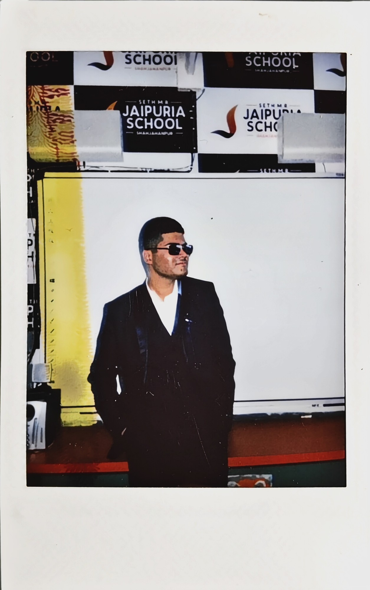

PRATHAM
PANDEY

Student,
builder,
maker of apps.
BCom / multidisciplinary / India
PANDEY
MADE IT
Student builder • India • Open to internships • Apps / backends / videos / business models • Student builder • India • Open to internships • Apps / backends / videos / business models •
About / 01
Curious onpurpose.
I’m a first-semester BCom student who builds apps, backends, videos, and business models alongside coursework.
I like taking an idea seriously enough to understand its interface, its system, and the real constraints behind it.
More about my approach ↗Project selector / drag, arrows, keyboard
- Mobile product interfaces Flutter / Compose / Capacitor
- Frontend systems React / TypeScript / Vite
- Media processing FFmpegKit
- Backend services FastAPI / Ktor / Dio
- Edge platform Cloudflare Pages / D1 / R2
- P2P transport WebRTC / WebSockets
- State & local data Riverpod / Hive
- Product & systems thinking Architecture / implementation plans